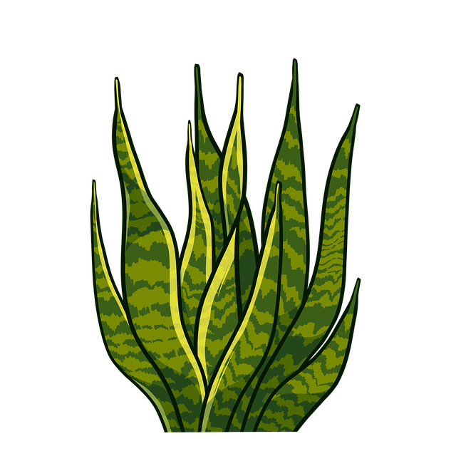
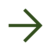

HOME
ABOUT
SKILL
PROJECT
CONTACT
건강한
정신의 개발자
임욱
입니다.

ABOUT
임욱 (Lim Wook)
건강한 신체에 건강한 정신이 깃든다
출생: 1999. 8. 13
전화번호: 010-1234-5678
이메일: cotowook@naver.com
학력
18.04 ~ 24.04 00대학교 졸업
25.10 ~ 26.04 클라우드(AWS)활용 자바/스프링 개발 부트캠프 수료
기술
Java
C
Python
HTML
CSS
Javascript
Oracle
MySql
React
SpringBoot
자격증
00기사
SQL개발자
프로젝트
project1
project2
project3
SKILL
React
전역 상태 관리
클라이언트 라우팅
CSR 방식 앱개발
SpringBoot
API 설계
보안 인증 및 인가
데이터베이스 활용 및 성능 최적화
DBMS
설계 및 정규화
저장 프로시저, 트랜잭션 관리
연동, 객체 관계 매핑

1. 커뮤니티 및 소셜 기능 중심의 서비스
2. 관리 시스템 및 대시보드
3. 이커머스 및 예약/결제 서비스
PROJECT
프로젝트1
배경 :
00을 하기 위해서 만들었다.
적용 기술 :
HTML, CSS, JS
개발기간 :
25.11.03 ~ 25.11.10
주요 기능 :
00을 00한다.
GitHub
배포링크
프로젝트2
배경 :
00을 하기 위해서 만들었다.
적용 기술 :
HTML, CSS, JS
개발기간 :
25.11.03 ~ 25.11.10
주요 기능 :
00을 00한다.
GitHub
배포링크
프로젝트3
배경 :
00을 하기 위해서 만들었다.
적용 기술 :
HTML, CSS, JS
개발기간 :
25.11.03 ~ 25.11.10
주요 기능 :
00을 00한다.
GitHub
배포링크
프로젝트4
배경 :
00을 하기 위해서 만들었다.
적용 기술 :
HTML, CSS, JS
개발기간 :
25.11.03 ~ 25.11.10
주요 기능 :
00을 00한다.
GitHub
배포링크
CONTACT
010-1234-5678
cotowook@naver.com
github.com/Cotowook
이미지
close
arrow_upward